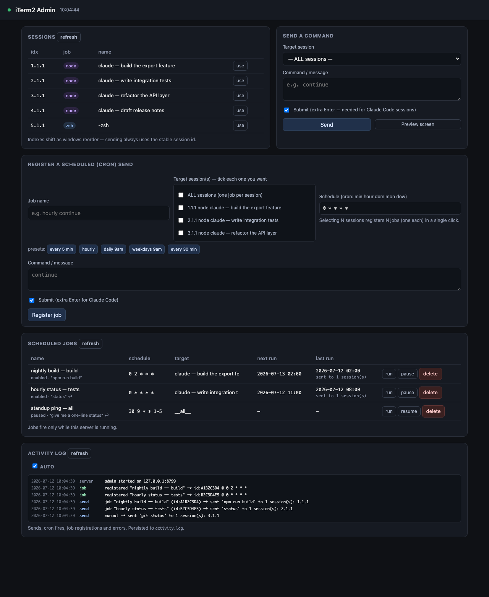

itermon.
Monitor every running iTerm2 session from one place — send commands to any of them, read their screens, and schedule recurring sends with cron. A zero-dependency CLI and local web admin for macOS.
npm install -g itermonFeatures
- 01
List
Every session across every window, tab, and split pane — with tty, foreground job, and a stable UUID.
- 02
Send
Fire a command at one session, a matched subset, or all of them — from the CLI or the local web UI.
- 03
Read
Print any session's visible screen contents without touching the window.
- 04
Watch
A live auto-refreshing monitor of all sessions, right in your terminal.
- 05
Schedule
Recurring sends with cron expressions, run by an in-process scheduler.
- 06
Activity Log
A live, timestamped feed of every send, cron fire, and error.
The Web Admin

Install
From npm
$ npm install -g itermon $ iterm-admin --open # launch the web admin $ iterm-ctl list # the CLI
macOS · needs Python 3.10+ & iTerm2. Zero dependencies — pure Python standard library, no pip install.
From source
$ git clone https://github.com/KuronokiCorp/usageMonitoring.git $ cd usageMonitoring $ npm start # admin at 127.0.0.1:8765
Works straight after clone — no npm install required. The first run triggers a one-time macOS prompt to allow controlling iTerm2.